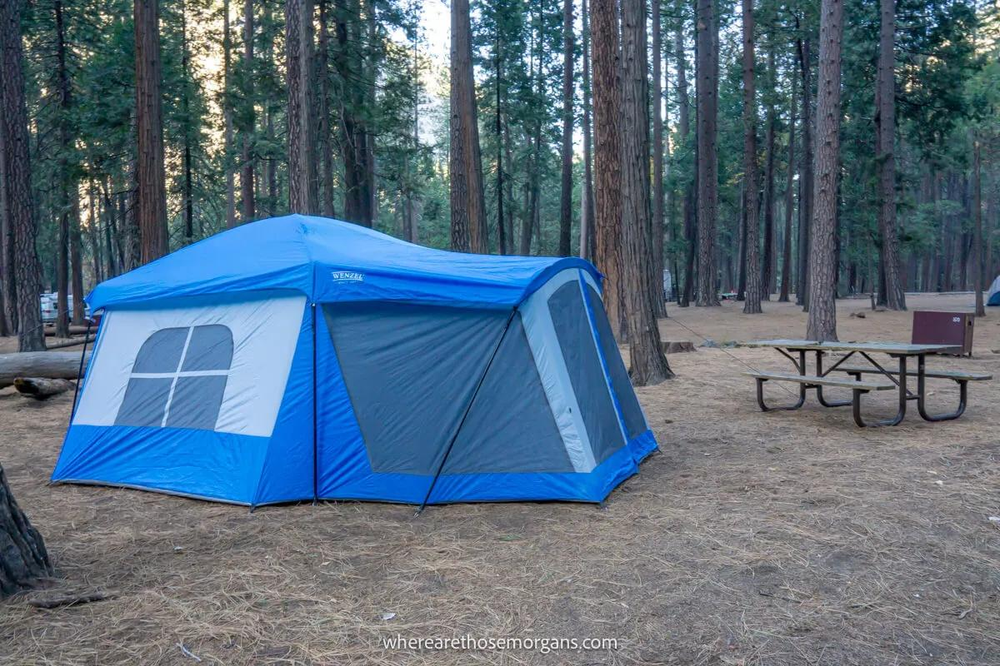

当前重要提醒
Current Alerts
!
冰川点路临时关闭：受多姆火灾（Dome Fire）影响，
冰川点路（Glacier Point Road）曾一度关闭，冰川点景区暂时无法抵达。
请关注 NPS 官方通告，待道路安全评估通过后再行开放。
园方会因天气、火灾、道路施工或落石随时调整通行安排。 下表中的提醒类型是最常见的几类，建议在出发前逐项核对。
01
道路封闭
冬季积雪、春季融雪与落石都会导致路段关闭，高地道路季节性封闭最明显。
02
火灾影响
野火可能造成道路封闭、能见度下降与空气质量恶化，需留意烟雾提示。
03
施工延误
道路维护常导致单向通行与长时间延误，尤其在非旺季。
04
步道关闭
部分步道因维修、野生动物活动或危险状况临时关闭。
道路与设施关闭规律
Typical Closure Patterns
| 路段 / 设施 | 典型封闭期 | 影响 | 替代方案 |
|---|---|---|---|
| 蒂奥加路 | 约 11 月 – 次年 6 月 | 无法抵达图奥勒米草甸与东部出口 | 改走西门或南门进出 |
| 冰川点路 | 降雪期 + 火灾等突发状况 | 无法上冰川点俯瞰全谷 | 改在隧道观景台拍摄谷景 |
| 马里波萨巨杉林接驳车 | 冬季停运 | 需自行步行进入林中 | 冬季通常仍可步行抵达部分巨杉 |
| 谷底部分步道 | 视维修与危险状况 | 个别观景点无法抵达 | 改走平行线路或草甸环线 |
!
上表是常见规律而非承诺。每年开放与封闭的具体日期都可能不同，
请以官方实时公告为准。
怎么查实时状况
Checking Conditions
出发前一晚与当天早上各看一次，能避开绝大多数"白跑一趟"的意外。 重点关注以下四类信息：
- 道路开放状态：确认你要走的入口与园内道路是否通行、是否需要防滑链。
- 入口排队时间：旺季入口可能排队 1 小时以上，调整出发时间可显著改善体验。
- 空气质量与烟雾：火灾季需关注烟霾对能见度与呼吸的影响。
- 步道与营地状态：确认目标步道是否开放、营地是否可用。
i
权威信息请以 nps.gov/yose 的"Current Conditions"页面为准。
本页仅作汇总说明，不提供实时数据。
交通与人潮
Traffic & Crowds

优胜美地是繁忙之地
在 7–8 月的周末，谷底可能出现持续的交通拥堵， 入口排队一小时、绕半小时找不到车位都是常态。
最有效的应对是早进园、停在大型停车场、改乘免费班车。 另外，把游览重心放到非谷底区域，也能明显避开人潮。
- 清晨进园：上午 7 点前抵达入口，通常能避开排队高峰。
- 善用班车：谷底班车免费，可省掉反复挪车的麻烦。
- 避开周末：工作日的游客量通常显著低于周末。
- 备好停车方案：若主停车场已满，注意不要占用非停车区域。
宠物政策
Pets in the Park
想带四条腿的朋友同行？可以，但限制比多数人预期的严格。 在优胜美地，宠物不能进入步道、草甸与荒野区域。
| 区域 | 宠物可否进入 | 约束条件 |
|---|---|---|
| 铺装道路与停车场 | 可以 | 必须牵绳，绳长通常不超过 2 米 |
| 已开发营地 | 可以 | 须牵绳，不得无人看管，不得留在营地外 |
| 步道与草甸 | 不可以 | 含多数景观步道在内，一律禁止 |
| 荒野与偏远区域 | 不可以 | 为保护野生动物与生态，全面禁止 |
| 园内住宿 | 视具体规定 | 多数有单独限制，预定时请确认 |
!
宠物在任何情况下都不得无人看管，也不得留在车内高温环境中。
违规可能面临处罚，请提前为宠物安排寄养或调整行程。
获取更新
Stay Updated
- 官方网站：nps.gov/yose 是最权威、更新最及时的信息源。
- 官方应用：NPS App 提供道路状态、营地信息与离线地图。
- 电话咨询：园方总机 209 / 372-0200，适合行前确认路况。
- 社交媒体：园方账号会发布临时封闭与紧急通告。
i
本页为信息汇总页，内容编译自 NPS 公开资料，
不提供实时数据，也不能替代官方公告。
所有出行决策请以 nps.gov 为准。